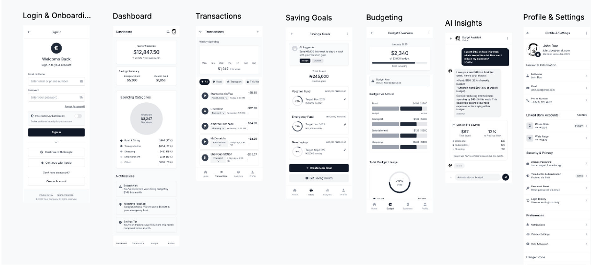

Requirements, wireframes, and process thinking for a digital savings app — the paper trail that gets a product idea to build-ready.
A digital savings product needed to go from concept to something a design and engineering team could actually build. What does a first-time user need to see on day one? How do budgeting, savings goals, and AI-driven spending insights fit together without overwhelming someone who just wants to save money for a specific goal?
I worked through this the way a BA hands a product off to build: define the user journey first, then wireframe every core screen against real user needs before a single line of UI code gets written.
Full user-journey wireframes — from sign-in through budgeting and AI-driven spending insights.

The wireframe set gave design and engineering a build-ready starting point instead of a vague feature list — every screen ties back to a documented requirement, so nothing in the UI exists without a reason. The AI Insights and Budgeting screens in particular forced an early decision on how much financial guidance to surface automatically versus on request, a scope question that's much cheaper to resolve at the wireframe stage than after development starts.
Want the full breakdown — queries, data model, or wireframes?
View full repo on GitHub